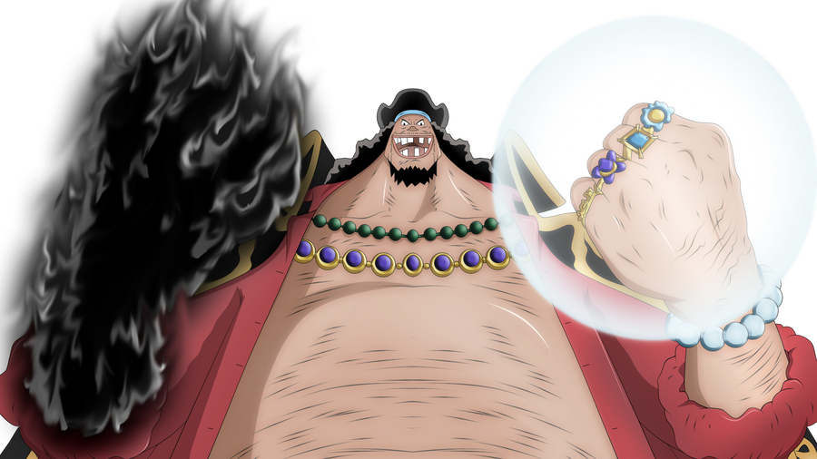

Você conhece Marshall D. Teach?
Assista a Perfeição
Apenas visualizar a Perfeição
Você conhece Marshall D. Teach?
ou como comumente chamado: Barba Negra.
Assista a Perfeição
Apenas visualizar a Perfeição
{kind=link}
Aviso: cuidado para não se apaixonar!
"Os sonhos das pessoas não tem fim!"
Não o conhece?
Para você que não conhece tanto sobre o incrivel Marshall D. Teach, sob alcunha de Barba Negra, está convidado a se aprofundar melhor sobre esse renomado pirata em "link ae" logo acima.
Buscamos sempre atualizar notícias sobre Teach e seu bando, como poderes, teorias, feitos e opiniões populares e impopulares. Aqui você terá ótimas interações com outros usuários e acesso a uma comunidade incrível.
Acesse aqui!Yami Yami no Mi ou
Goru Goru no Mi?
Você sabia que Barba Negra é o único usuário de 2 Akuma no Mi em One Piece? Caso queira saber melhor sobre as frutas cujas alcunha, literalmente, estremece qualquer rival, venha conhecer melhor!
Disponível nos seus dispositivos favoritos
-

TV
-

PC Gamer que tu ñ tem
-

Celulares e Tablets